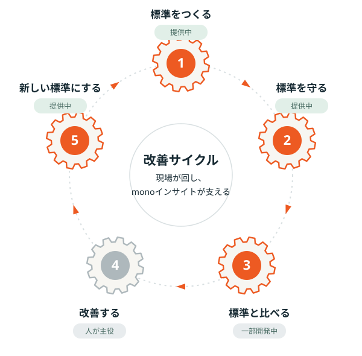
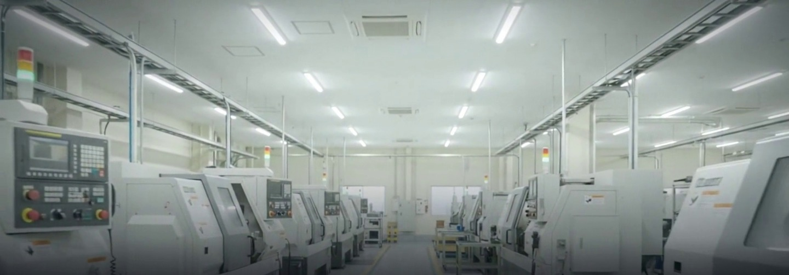

01作業標準書が、
作業標準書が、
現場の実態と合っていない。
標準化撮るだけで、
撮るだけで、
標準を最新に。

展示会でブースにお越しいただいた方へ。あなたの現場での活用を、ここから。
1959年創立の自動車部品メーカーが、
自社の改善活動のためにつくりました。
撮るだけで、作業の標準ができる。
AIが手順と急所を下書きし、ムダにも気づかせる。
動画マニュアル1本の作成時間
従来1時間以上・当社実績自動車部品・設備機械メーカーなどで利用中
2026年11月時点自動車部品メーカーが開発
自社の改善活動から生まれたツール


人手不足、ベテランの退職、外国籍作業者の増加、多品種化。
どの悩みも、年々重くなっています。
KAIZEN CYCLE
標準は、ムダや異常に気づくための物差し。
monoインサイトは、標準をつくり、守り、比べ、
新しい標準にする。その流れを、現場と一緒に回します。
※タクトタイムや標準手持ちの設定は、これまでどおり現場と生産管理が担います。

撮るだけで、AIが手順・字幕・急所を下書き。人が確認して仕上げる。
QRで現場に配布。受講状況・理解度テスト・英語翻訳で定着させる。
AIが手順を正味作業・付随作業・ムダに分類。定点撮影からのサイクル分析も。
改善するのは、現場の人。気づきを記録し、評価する。
良くなったやり方は、その場で撮り直して標準を更新。
声の説明がなくても、AIが映像から作業を読み取り、手順と字幕を下書き。
タブレット・PCで撮った動画を、現場で使える標準へ。
AIが作業の流れを読み取り、手順と字幕を下書き。
現場の言葉に直して、使えるマニュアルへ。
このページ内にデモ画面が開きます。
動画・結果の保存期限は7日。解析用画像は、検出した顔・文字領域を隠してからAIに送信します。データの取り扱い

まもなく操作画面が開きます。
ローカル版は「3-起動.cmd」から開いてください。起動済みの場合は再接続できます。
デモを別タブで開く ↗AIが下書きし、人が仕上げるデモです。動画・音声は最長90秒、AI解析はこのデモ環境で1回限り。字幕・表示時間を編集し、作業標準書をPDFで保存できます。
体験できる機能：動画・音声のアップロード、参考PDFの添付、AIによる手順・字幕・作業標準書の生成、字幕の内容・表示時間の編集、タイムラインの拡大・縮小、矢印・注意マーカー、保存、PDF保存。
デモ対象外：カイゼン、可動率、学習の受講管理、QR配布、編集済みMP4の書き出し。AIの出力は下書きです。作業を理解した方が内容を確認してください。
AI解析はこのローカルデモ環境全体で1回限りです。Cookie削除や別ブラウザーでも利用回数は戻りません。AI送信後は失敗・中断時も利用枠を消費します。保存済み結果の閲覧・編集・PDF保存は引き続き利用できます。API利用料金は設定したキーに応じて発生します。表示サンプルはAPIキーなしで開けます。
現在のローカルデモのデータ取り扱い：素材・結果はこのPCに保存します。保存期限は7日で、期限後にアプリ起動時または起動中の定期処理で削除します。解析用画像では検出した顔・文字領域（名札を含む）を隠しますが、検出漏れの可能性があります。元動画・音声・参考PDFはこの処理の対象外です。解析用の画像・文章はClaude APIに送信します。個人情報・機密情報を含まない素材をご利用ください。
タイムライン上で、手順の切れ目を調整。
再生しながら、使い慣れた現場の言葉へ。
矢印や警告マークで、注意点を強調。
作業標準書は、「何を、どの順番で、何に気をつけて行うか」をまとめた現場の手引きです。
monoインサイトは、動画の手順に品質・安全・作業のポイントを添えて下書きします。
動画とつながった手順をもとに、
作業内容と注意点をまとめます。
作業標準書
安全停止状態を確認してから作業を始める。
品質対角の順に緩める。
作業のポイント吊り具の掛かりを確認する。
手順ごとに動画の時刻も記載。動きを見返したいときの目印に。
順番や条件など、品質を左右する注意点を残します。
作業前の確認や危険な動作など、気をつける点を伝えます。
手順だけでは伝わりにくい、確認箇所や作業のコツを添えます。
AIの下書きを担当者が仕上げ、印刷して作業場に置いたり、教育時の確認に使ったりできます。
FROM TEACHING TO KAIZEN
教育のためにつくった動画マニュアルが、そのまま改善の材料になる。
AIが手順を正味作業・付随作業・ムダに分類。教育の段階から改善の視点を持てます。
表示イメージ。分類と時間配分は作業によって異なります。
定点撮影からのサイクル分析で、付随作業と作業者ごとのばらつきを検出。
作業のばらつきに、気づける。
開発中のコンセプトイメージ。提供時期は未定です。

現場の実感から、生まれました。BUILT ON THE FACTORY FLOOR
開発するのは、1959年創立の自動車部品メーカー、オーテック。冷間鍛造を軸にエンジン・排気系部品をつくりながら、技術継承と日々の改善に向き合ってきました。
株式会社オーテックについて ↗令和7年度 第2回 素形材産業経営賞
「経済産業省製造産業局長賞」
第10回 ものづくり日本大賞
「中部経済産業局長賞」（「DENSHO AI」）
標準をつくり、伝え、改善につなげる。現場に必要な両方の強みを。
| 選ぶときの視点 | 動画マニュアル作成ツール | 改善支援ツール （IoT・稼働監視） | mono インサイト |
|---|---|---|---|
| 得意なこと | 作業手順を、動画で伝える | 設備の稼働・停止を、数字で見える化 | 動画マニュアルの強み改善支援の強み 標準を伝え、ムダに気づき、改善につなげる |
| 見えるもの | 作業の手順 | 設備の動き（人の作業は見えにくい） | 動画マニュアルの強み改善支援の強み 人の作業の手順と、正味作業・付随作業・ムダ |
| 始め方 | 端末で撮影して編集 | センサーの設置・配線が必要 | 動画マニュアルの強み改善支援の強み タブレットで撮るだけ。IoTは必要な工程にだけ追加（オプション・予定） |
| 教育・定着 | 配信・視聴管理 | 対象外のことが多い | 動画マニュアルの強み QR配布・受講管理・理解度テスト・英語翻訳 |
| 改善への展開 | マニュアルの共有まで | 問題は見えるが、原因の作業は別に調べる | 改善支援の強み 3分類で原因の作業まで見える。サイクル分析・カイゼン管理 開発中 |
| 標準の更新 | 作り直しが必要なことが多い | 対象外 | 動画マニュアルの強み改善支援の強み 撮り直して更新。急所付きの作業標準書も |
一般的な用途・設計の違いを整理した比較です。特定製品の性能評価ではありません。機能は製品・プランによって異なります。
標準書に沿った手順名・粒度で、使えるマニュアルへ。
品質・安全のポイントを、動画と作業標準書に。標準があるから、改善の物差しになる。
ユーザー数による課金なし。共有端末での受講にも対応。
顔・名札の自動マスキング、国内保管に対応。
記憶を頼りにする前に、
手順を確かめる。
作業観察のその場で、
基準を確認する。
新人・外国籍の方の、
最初の一歩を支える。
間違えやすい急所を、
動画で伝える。
ユーザー数で、料金は増えません。
企業の規模に合わせた、4つの料金体系。
現場のお悩みや、試したい
作業をお聞かせください。
利用条件を確認し、
体験環境をご案内します。
作業の概要や標準書も添えて、
AIでマニュアルの下書きを。
内容を確認・修正して、
教育や技術継承に活用。
AIが作業手順や字幕の下書きをつくります。字幕の打ち直しや手順の区切り調整など、直感的な操作で仕上げられます。AIの出力内容は、作業を理解した方による確認・修正が必要です。
トライアルの期間・利用範囲・開始手順は、お申し込みの際にご案内します。まずは試したい作業やご利用のイメージをお聞かせください。トライアルについて相談する
共有端末で名前を選び、視聴する運用に対応しています。誰がいつ視聴・完了したかの記録は、個人ごとに管理できます。
現在は英語への自動翻訳に対応しています。翻訳した手順や安全上の注意点は、現場で確認してからご利用ください。
サービスでは、AI解析前に顔・名札などを自動マスキングし、データを国内の東京リージョンで保管します。通信・保管データは暗号化されます。詳細な適用範囲や運用条件は、導入時にご確認いただけます。
ご契約終了時には、データを標準形式（MP4＋JSON）で無償でお渡しします。データの削除証明書も無償で発行します。
カイゼン機能は現在開発中です。提供時期や内容は、今後ご案内します。このLP内のサイクル分析は、開発中のコンセプトイメージです。